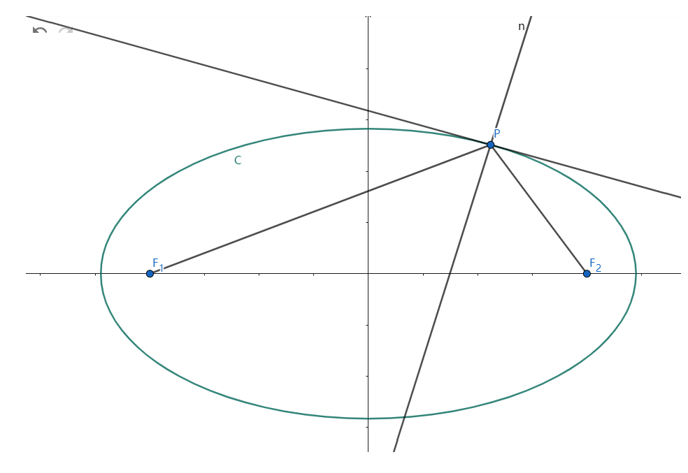
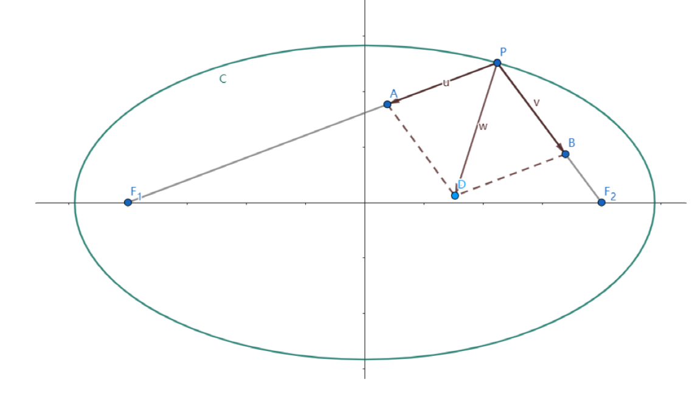

-
2026/6/13

我们知道椭圆具有这样的光学性质:
由焦点F_1
发出的一条光线\bvec{F_1P},经椭圆面反射,出射光线经过
另一焦点 F_2
即
入射光线为\bvec{F_1P},出射光线为\bvec{PF_2}
光学性质有多样的证明方法,下面给出一种较为直接的证法
欲证光学性质,只需证P点的法线平分\angle F_1PF_2
只需证P点的法向量\vec{n}与\angle F_1PF_2的角平分线共线
设椭圆C焦点F_1 \left( -c,0\right) F_2 \left( c,0\right)
长轴长为2a
椭圆上任意一点P \left( x_0,y_0\right)
求\angle F_1PF_2的角平分线S

设\vec{u} 为PF_1的单位向量,\vec{v} 为PF_2的单位向量
\vec{u}=\frac{\bvec{PF_1}}{\left| PF_1 \right| }\vec{v}=\frac{\bvec{PF_2}}{\left| PF_2 \right| }\vec{w}=\vec{u}+\vec{v}则PADB为菱形,PD为PA与PB的角平分线,
即\vec{w}与\angle F_1PF_2的角平分线共线
\vec{w}= \frac{\bvec{PF_1}}{\left| PF_1 \right| }+\frac{\bvec{PF_2}}{\left| PF_2 \right| }求P点法向量\vec{n}
先写出椭圆方程
\sqrt{\left( x+c \right) ^2+y ^2}+\sqrt{\left( x-c \right) ^2+y ^2}=2a
法一
两侧对x求导
\frac{x+c}{\sqrt{\left( x+c \right) ^2+y ^2}}+\frac{y}{\sqrt{\left( x+c \right) ^2+y ^2}} \dfrac{dy}{dx}+\frac{x-c}{\sqrt{\left( x-c \right) ^2+y^2}}+\frac{y}{\sqrt{\left( x-c \right) ^2+y ^2}}\dfrac{dy}{dx}=0可以解得\frac{dy}{dx}
P点切线斜率为\left. \frac{dy}{dx} \right| _{x=x_0}
切线方向向量\vec{l}= \left( 1,\left. \frac{dy}{dx} \right| _{x=x_0} \right)
则
\vec{n} = \left( \left. \frac{dy}{dx} \right| _{x=x_0},-1 \right)
= \left( \frac{x+c}{\sqrt{\left( x+c \right) ^2+y ^2}}+\frac{x-c}{\sqrt{\left( x-c \right) ^2+y^2}} , \frac{y}{\sqrt{\left( x+c \right) ^2+y ^2}}+\frac{y}{\sqrt{\left( x-c \right) ^2+y ^2}} \right)=\frac{\bvec{F_1P}}{\left|PF_1\right|}+\frac{\bvec{F_2P}}{\left| PF_2 \right| }
法二
设f \left( x,y\right) =\sqrt{\left( x+c \right) ^2+y ^2}+\sqrt{\left( x-c \right) ^2+y ^2}
则椭圆C是f的一条等值线
由\nabla f与f \left( x,y\right)等值线垂直
得
\begin{aligned}
\vec{n} = &\nabla f \\
= & \left( f_x', f_y' \right) \\
= & \left( \frac{x+c}{\sqrt{\left( x+c \right) ^2+y ^2}}+\frac{x-c}{\sqrt{\left( x-c \right) ^2+y^2}} , \frac{y}{\sqrt{\left( x+c \right) ^2+y ^2}} + \frac{y}{\sqrt{\left( x-c \right) ^2+y^2}} \right) \\
= &\frac{\overrightarrow{F_1P}}{\left|PF_1\right|}+\frac{\overrightarrow{F_2P}}{\left| PF_2 \right| }
\end{aligned}结论
综上
\begin{aligned}
&\vec{w}=\frac{\bvec{PF_1}}{\left| PF_1 \right| }+\frac{\bvec{PF_2}}{\left| PF_2 \right| } \\
&\vec{n}=\frac{\bvec{F_1P}}{\left|PF_1\right|}+\frac{\bvec{F_2P}}{\left| PF_2 \right| }
\end{aligned}故
\vec{w} \parallel \vec{n}光学性质得证